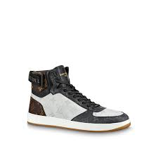
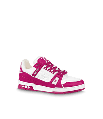
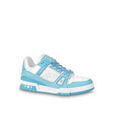

Louis Vuitton was a French fashion designer and skilled craftsman and he established his eponymous brand in Paris in 1854. Vuitton started his career making trunks for Napoleon III's wife, Empress Eugénie de Montijo, and it was at the age of 33 that he opened his own artisanal workshop at 4 Rue Neuve-des-Capucines.
Louis Vuitton (born August 4, 1821, Anchay, France—died February 27, 1892, Asnières-sur-Seine) was a French box maker and entrepreneur who founded his namesake brand of luxury trunks and luggage in 1854.
  